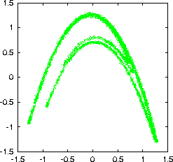
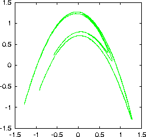

Performs nonlinear projective noise reduction. Output file (the cleaned sequence) is file_c[ccc] (one letter c per iteration). As a second column, the difference between original and cleaned sequence is printed.
-m embedding dimension
-q dimension of manifold
-r radius of neighbourhoods
-k minimal number of neighbours
-i number of iterations (1)
-l number of values to be read (all)
-x number of values to be skipped (0)
-c column to be read (1 or file,#)
-o output file name, just -o means file_c, file_cc (etc.)
-V verbosity level (0 = only fatal errors)
-h show this messageverbosity level (add what you want):
1 = input/output
2 = state of neighbour search
Note: This routine is largely redundant with ghkss.
This routine is based on
P. Grassberger, R. Hegger, H. Kantz, C. Schaffrath, and T. Schreiber,
On noise reduction methods for chaotic data,
Chaos 3, 127 (1993);
Reprinted in: E. Ott, T. Sauer, and J. A. Yorke, eds.,
Coping With Chaos, Wiley, New York (1994)
> henon -l10000 > data > addnoise -v0.02 data > project -m7 -q2 -r0.05 -k20 -i3 data_noisy gnuplot> plot '< cat data_noisy | delay' gnuplot> plot '< cat data_noisy_ccc | delay'
 